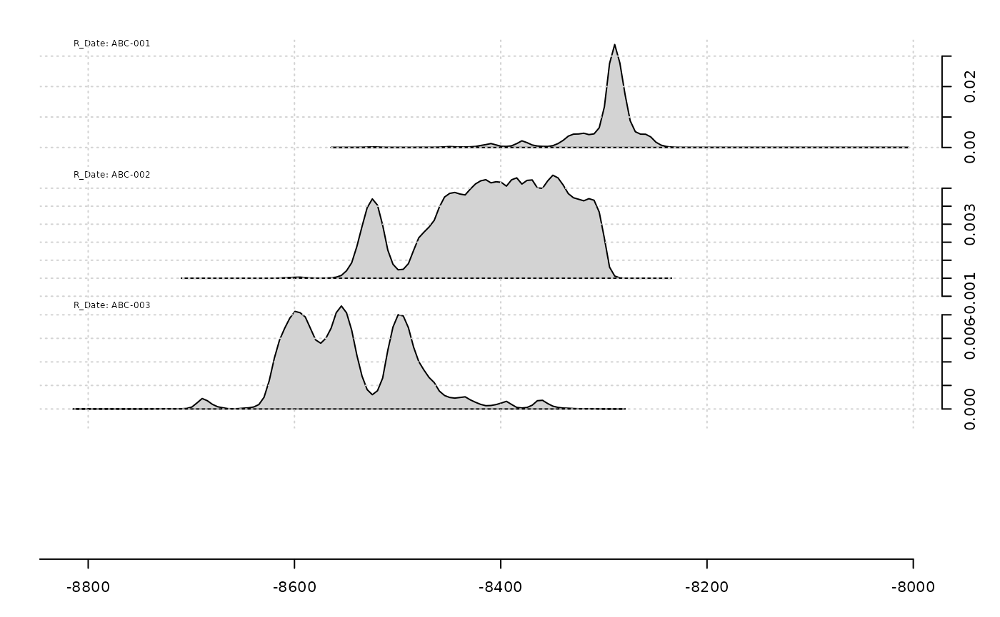
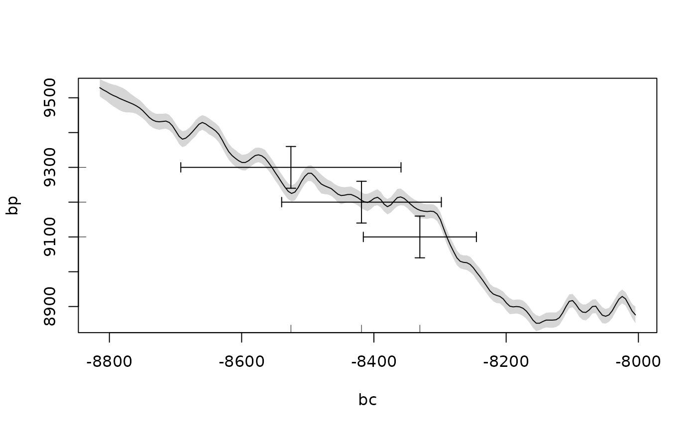

The Chronological Query Language (CQL) is a tool for formally
describing chronological models (Bronk Ramsey
1998). It is most commonly used to input data for Bayesian
radiocarbon calibration in OxCal (Bronk Ramsey 2009). stratigraphr
includes an R interface for CQL2, the version used in OxCal v3+.
This vignette describes how to use this interface to generate CQL models in R.
Overview
- Individual CQL commands (see https://c14.arch.ox.ac.uk/oxcalhelp/hlp_commands.html)
are implemented as
cql_*functions. - Use
cql()to group together CQL functions or include arbitrary CQL code. - Execute CQL scripts in OxCal using
write_oxcal()or the oxcAAR package.
Generating CQL models from other types of data
Used in the simple way above, stratigraphr’s CQL
interface offers little benefit over writing CQL directly. Its real
power is in combining cql() with other R tools to build
models based on other data.
For the following examples, we will use a simple example dataset of radiocarbon dates:
library("purrr")
library("dplyr")
#>
#> Attaching package: 'dplyr'
#> The following objects are masked from 'package:stats':
#>
#> filter, lag
#> The following objects are masked from 'package:base':
#>
#> intersect, setdiff, setequal, union
dates <- data.frame(
lab_id = c("ABC-001", "ABC-002", "ABC-003", "ABC-004", "ABC-005"),
age = c(5050, 5000, 4950, 4900, 4850),
error = c(30, 30, 30, 30, 30),
phase = c("Phase 1", "Phase 1", "Phase 1", "Phase 2", "Phase 2")
)Tabular data
With radiocarbon data in a tabular format, you can take advantage of
dplyr’s powerful tools for data manipulation to build CQL
models programmatically.
For example, use dplyr::mutate() to concisely express a
table of dates as CQL R_Date commands:
dates |>
mutate(r_date = cql_r_date(lab_id, age, error)) |>
pluck("r_date") |>
cql()
#> // CQL2 generated by stratigraphr v0.4.0.9000
#> R_Date("ABC-001", 5050, 30);
#> R_Date("ABC-002", 5000, 30);
#> R_Date("ABC-003", 4950, 30);
#> R_Date("ABC-004", 4900, 30);
#> R_Date("ABC-005", 4850, 30);Or use dplyr::group_by() and
dplyr::summarise() to build phase models. This is a three
stage process:
- Preprocess the dates, e.g. to order phases.
- Group dates by phase and summarise them with
cql_phase(). - Group phases into a sequence, using
boundariesto automatically add boundary constraints between them.
dates |>
group_by(phase) |>
summarise(cql = cql_phase(phase, cql_r_date(lab_id, age, error))) |>
arrange(desc(phase)) |>
summarise(cql = cql_sequence("Example Sequence", cql, boundaries = TRUE)) |>
pluck("cql") |>
cql() ->
example_cql
example_cql
#> // CQL2 generated by stratigraphr v0.4.0.9000
#> Sequence("Example Sequence")
#> {
#> Boundary("");
#> Phase("Phase 2")
#> {
#> R_Date("ABC-004", 4900, 30);
#> R_Date("ABC-005", 4850, 30);
#> };
#> Boundary("");
#> Phase("Phase 1")
#> {
#> R_Date("ABC-001", 5050, 30);
#> R_Date("ABC-002", 5000, 30);
#> R_Date("ABC-003", 4950, 30);
#> };
#> Boundary("");
#> };Running CQL models
You can run models generated by cql() using the desktop
or online versions of OxCal by simply copying the output into the
program. Alternatively, use write_oxcal() to create a
.oxcal file:
oxcal_cql <- cql(
cql_r_date("ABC-001", 9100, 30),
cql_r_date("ABC-002", 9200, 30),
cql_r_date("ABC-003", 9300, 30)
)
write_oxcal(oxcal_cql, "cql.oxcal")You can also run OxCal directly through R using the oxcAAR package.
This depends on a local installation of OxCal. If you already have one
installed, you can set the path to the executable using
oxcAAR::setOxcalExecutablePath(). Otherwise, use
oxcAAR::quickSetupOxcal() to download one, for example to a
temporary directory:
library("oxcAAR")
quickSetupOxcal(path = tempdir())You can then use oxcAAR::executeOxcalScript() to run the
CQL script and oxcAAR::readOxcalOutput() to read the output
back into R.
executeOxcalScript(oxcal_cql) |>
readOxcalOutput() ->
oxcal_outputYou can parse the output with oxcAAR::parseOxcalOutput()
and visualise it using oxcAAR’s built-in plotting
functions:
oxcal_parsed <- oxcAAR::parseOxcalOutput(oxcal_output)
plot(oxcal_parsed)
calcurve_plot(oxcal_parsed)

The current CRAN version of oxcAAR (v. 1.0.0) does not read the
posterior probabilities produced by a model with Bayesian calibration,
so to work with these you need to install the latest development version
(devtools::install_github("ISAAKiel/oxcAAR")). With this,
oxcAAR::parseOxcalOutput() also contains the modelled
results in $posterior_sigma_ranges and
$posterior_probabilities. Again, you can quickly visualise
these with the built-in plotting functions:
# Not run: slow
example_oxcal <- executeOxcalScript(example_cql)
readOxcalOutput(example_oxcal) |>
parseOxcalOutput() |>
plot()